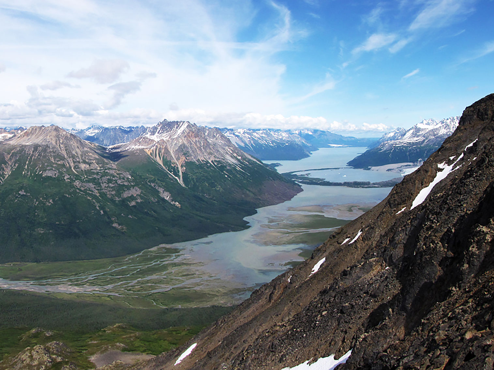
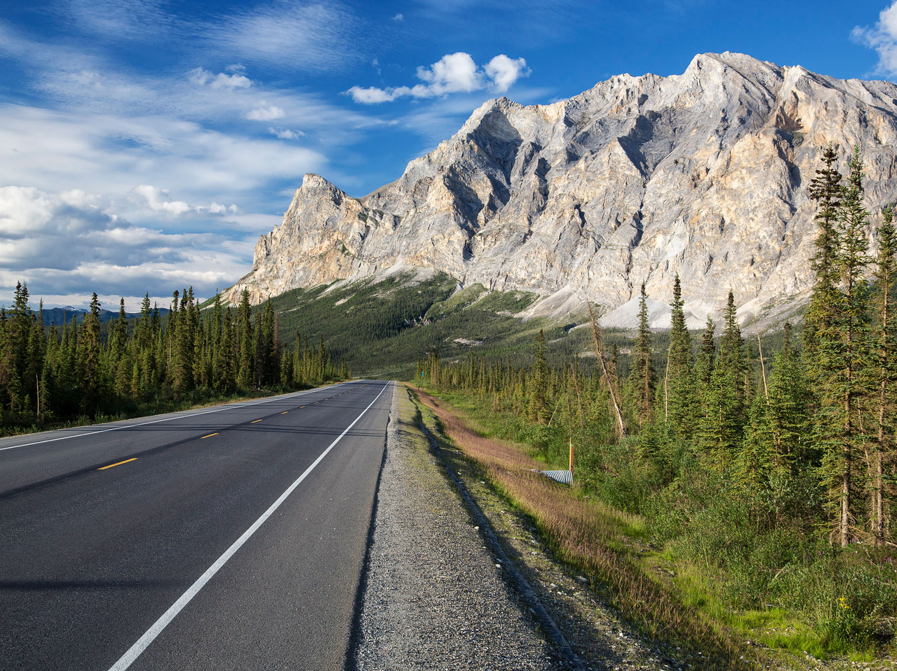
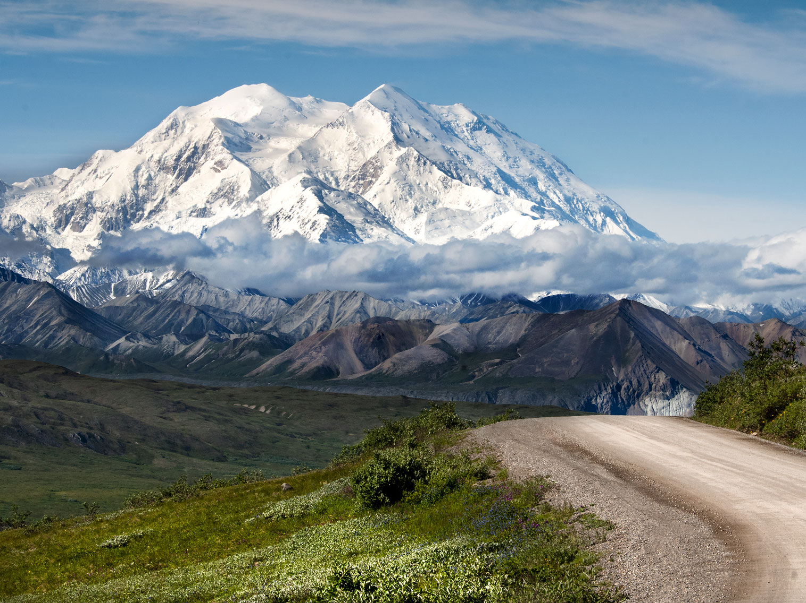
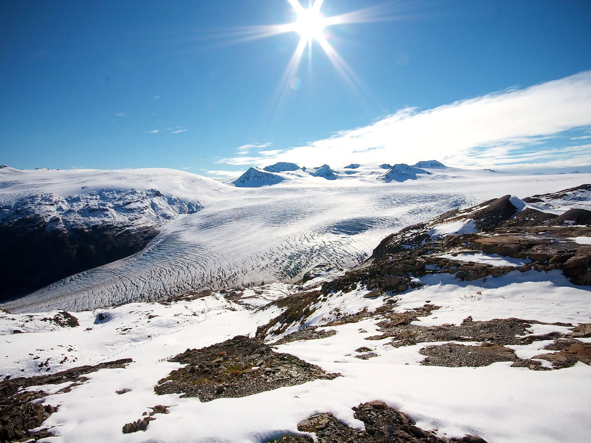
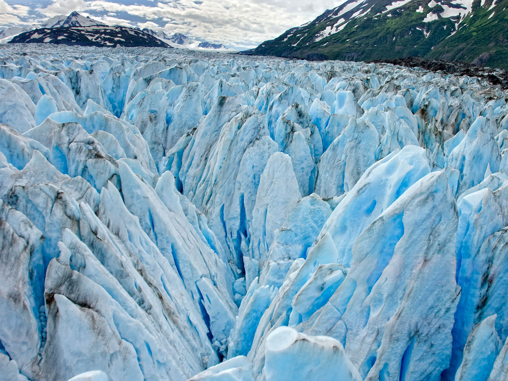
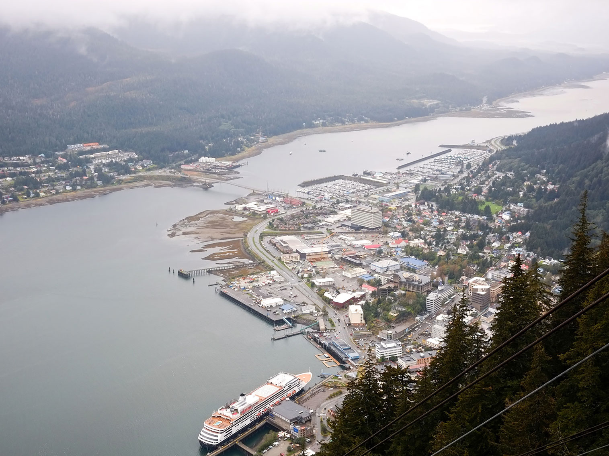

Alaska Travel Guide
America's last frontier: glaciers, grizzly bears, and midnight sun. Explore vast wilderness, Denali's peaks, and charming coastal towns by land, sea, or air.
-400.jpg)


-400.jpg)

Featured Regions

Chakachamna Lake, Lake Clark National Park and Preserve
James JonesResearch GeologistUSGS, Alaska Science Centerjvjones@usgs.gov, Public domain, via Wikimedia Commons; Cropped and Image Size Adjusted
.jpg){kind=link}
Alaska Peninsula and Aleutian Islands★
Peninsula extending about 800 km (497 mi) to the southwest from the mainland of Alaska and ending in the Aleutian Islands, separating the Pacific Ocean from Bristol Bay, an arm of the Bering Sea
Anchorage and Matanuska Susitna Valley★
Region that offers a unique blend of urban amenities and stunning natural landscapes. Anchorage, the largest city in Alaska, serves as a gateway to the wilderness, while the Matanuska Susitna Valley is known for its breathtaking scenery, outdoor recreational opportunities, and rich cultural heritage. Visitors can explore the vibrant city life of Anchorage, with its museums, restaurants, and shops, before venturing into the valley to experience activities such as hiking, fishing, and wildlife viewing amidst the backdrop of majestic mountains and glaciers.

Bureau of Land Management, Public domain, via Wikimedia Commons; Image Size Adjusted
.jpg){kind=link}
Alaska Bush★
Regions of Alaska not connected to the North American road network or does not have ready access to the state's ferry system

Denali National Park and Preserve, Public domain, via Wikimedia Commons; Image Size Adjusted
.jpg){kind=link}
Interior Alaska★
Central region of Alaska's territory, is largely wilderness, and includes Fairbanks, Alaska's second-largest city

Sujohn Das from Seattle, USA, CC BY-SA 2.0, via Wikimedia Commons; Image Size Adjusted

Kenai Peninsula★
Large peninsula jutting from the coast of Southcentral Alaska

Carol M. Highsmith, Public domain, via Wikimedia Commons; Image Size Adjusted
Prince William Sound and Surrounding Areas★
Sound of the Gulf of Alaska on the south coast of Alaska, located on the east side of the Kenai Peninsula

Mark Hogan, CC BY-SA 2.0, via Wikimedia Commons; Image Size Adjusted

Southeast Alaska★
Colloquially referred to as the Alaska Panhandle or Alaskan Panhandle, Southeast Alaska is the southeastern portion of Alaska, bordered to the east by the northern half of the Canadian province of British Columbia
Overview
Alaska is the largest U.S. state, bigger than the next three (Texas, California, and Montana) combined, in the far northwest of North America. It has 17 of the country's 20 highest peaks, more than 100,000 glaciers, millions of acres of wilderness, and more coastline than the rest of the U.S. combined. Juneau is the capital, Anchorage is the largest city, and the state has only about 730,000 people. Most of it is off the road system, and Juneau cannot be reached by road at all.
Visitors come for the scale and the wildlife: Denali and its grizzlies, caribou, and moose; brown bears fishing for salmon at Brooks Falls; whales and tidewater glaciers on an Inside Passage cruise or in Kenai Fjords; the Gold Rush town of Skagway; and the northern lights near Fairbanks. Others come to fish for salmon and halibut, fly into the backcountry, ride the Alaska Railroad, or follow the Iditarod Trail Sled Dog Race each March.
Geography
Alaska stretches from the temperate rain forests and fjords of the Southeast panhandle to the Arctic coast on the Beaufort and Chukchi Seas, and west along the volcanic Aleutian chain toward Russia. The Alaska Range rises above Interior Alaska, and Denali, at 20,310 feet (6,190 m), is the highest peak in North America. Farther north, the Brooks Range crosses the Arctic, while the Yukon, Tanana, and Kuskokwim Rivers drain the vast Interior and the tundra of the west. The state has some three million lakes, hundreds of volcanoes, and long summer days, including the midnight sun north of the Arctic Circle.
History
Alaska Native peoples, including the Iñupiat, Yup'ik, Unangax̂ (Aleut), Athabascan, Tlingit, Haida, and Tsimshian, have lived here for thousands of years, and the region is thought to be the entry point for the first settlement of North America across the Bering land bridge. Russia began colonizing in the 1740s, centered on Sitka, and the United States bought Alaska in 1867 for $7.2 million. The Klondike Gold Rush of the late 1890s funneled prospectors through Skagway, the Aleutian Islands saw fighting in World War II, and the 9.2-magnitude Good Friday earthquake struck in 1964. Oil from Prudhoe Bay began flowing down the Trans-Alaska Pipeline in 1977, and Alaska became the 49th state on January 3, 1959.
Getting to Alaska
Most visitors reach Alaska by air, with nonstop flights from Seattle, Portland, and other West Coast cities to Anchorage, the state's main gateway, taking about three and a half hours from Seattle. Alaska Airlines, Delta, United, and other carriers also fly to Fairbanks, Juneau, Ketchikan, and other towns, and seasonal service expands in summer. Cruise ships sail from Seattle, Vancouver, and other ports through the Inside Passage, and the Alaska Marine Highway ferry system connects Bellingham, Washington, with Southeast Alaska. Travelers can also drive the Alaska Highway, a roughly 1,400-mile road that starts at Dawson Creek, British Columbia, and runs through Canada's Yukon to Delta Junction, Alaska, which requires a passport and a trip of several days. There are no roads from the Lower 48 that stay within the United States. Summer flights and cruises book early, and fares are lowest in May and September.
Getting Around Alaska
Alaska is so large that transportation is part of the adventure, and only a small portion of the state is connected by road. The main highway system links Anchorage, Fairbanks, the Kenai Peninsula, and the Matanuska-Susitna Valley, with routes such as the Seward Highway, the Glenn Highway, the Parks Highway to Denali, and the long, gravel Dalton Highway toward the Arctic Ocean. The Alaska Railroad runs between Seward, Anchorage, Denali, and Fairbanks, with scenic dome cars, and offers the Aurora Winter Train. Rental cars and campervans are popular but expensive in summer, and many roads are narrow or unpaved. The Alaska Marine Highway ferries serve Southeast and Southwest coastal communities, many of which, including Juneau, the state capital, are not on the road system at all. Small bush planes and floatplanes reach remote villages, lodges, and parks, and about one in every 50 Alaskans is a licensed pilot. Fuel, food, and lodging are limited in remote areas, so travelers should plan ahead.
Northern Lights in Alaska
Alaska is one of the best places in the world to see the northern lights, or aurora borealis, which are caused by charged particles from the sun striking gases in Earth's upper atmosphere. The aurora season runs from late August through mid-April, when nights are long and dark, and the best viewing is typically between 10 p.m. and 2 a.m. on clear nights away from city lights. Fairbanks, in the Interior, sits under the "auroral oval" and has one of the highest aurora frequencies in the world, with lodges, tours, and viewing sites such as Chena Hot Springs, where visitors can soak in hot springs while watching the sky. Farther north, the Brooks Range and the Dalton Highway offer remote viewing, and Denali and Anchorage see the lights on strong nights. Solar activity varies in an 11-year cycle, and conditions can be checked with an aurora forecast. Winter nights are cold, so layers and patience are essential, and the Alaska travel in winter page has more advice.
Alaska Cruises
Cruising is one of the most popular ways to see Alaska, with more than a million visitors each summer arriving on ships between May and September. Most itineraries sail seven days through the Inside Passage, a sheltered network of fjords, islands, and rainforest in Southeast Alaska, and stop at ports such as Juneau, with the Mendenhall Glacier and whale watching, Skagway, a Klondike Gold Rush town with the White Pass and Yukon Route railroad, Ketchikan, with its totem poles and salmon, and Sitka, with Russian and Tlingit history. Many ships also cruise through Glacier Bay National Park, where tidewater glaciers calve into the sea, or visit Hubbard Glacier and Tracy Arm. One-way cruises between Vancouver or Seattle and Seward or Whittier cross the Gulf of Alaska and can be combined with a land tour to Denali, Fairbanks, and Anchorage by train or coach. Smaller expedition ships reach remote bays and wildlife areas, and the Alaska Marine Highway ferries offer a budget alternative. Cruise passengers should book shore excursions early and bring rain gear.
National Protected Areas
More than half of the country's national park acreage is in Alaska. The state has eight national parks: Denali, Glacier Bay, Kenai Fjords, Katmai, Lake Clark, Wrangell-St. Elias (the largest national park in the country), Gates of the Arctic, and Kobuk Valley. Most are reached only by boat or small plane. Other National Park Service areas include Klondike Gold Rush National Historical Park in Skagway, Sitka National Historical Park, Aniakchak and Cape Krusenstern National Monuments, and the Noatak, Yukon-Charley Rivers, and Bering Land Bridge National Preserves.
State Parks and Historic Sites
Alaska's state park system is the largest in the country. Chugach State Park rises just east of Anchorage with trails, wildlife, and glacier views, Denali State Park offers views of the mountain from the south, and Kachemak Bay State Park near Homer is a roadless coastal wilderness. Wood-Tikchik State Park in the southwest is the largest state park in the United States. Historic sites include Independence Mine State Historical Park at Hatcher Pass, a hard-rock gold mining complex, and Totem Bight State Historical Park near Ketchikan, with restored Native totem poles.
Seasons and When to Visit
Most travel happens from mid-May to mid-September, when days are long, tours and lodges are open, and wildlife is active. June and July have the midnight sun and the warmest weather, salmon runs peak in July and August, and bears gather at Brooks Falls in July and September. Late August and September bring fall color and the first chance for the northern lights, which are visible through April. Winter is cold and dark but offers dog mushing, skiing, and aurora viewing, with events such as Fur Rendezvous and the start of the Iditarod in February and March; see Alaska travel in winter. Getting around usually means small planes, the Alaska Marine Highway, and the Alaska Railroad, and travelers should carry bear spray and learn the rules for bears and moose.
This article uses material from the Wikipedia article "Alaska", which is released under the Creative Commons Attribution-Share-Alike License 3.0. Additional information was drawn from National Park Service, Alaska State Parks, Travel Alaska, and Alaska Marine Highway System.